ai-context
Büyük proje klasörlerini ayıklayıp okunabilir, kopyalanabilir ve token tahminli bir yapay zekâ bağlamına dönüştüren CLI aracı.
AHMET ÇETİN · KİŞİSEL DİJİTAL ATÖLYE
Bir fikir bazen araca, bazen görüntüye, bazen çalışan bir sisteme dönüşüyor.
Üretim dünyasından gelen merakımı kod, yapay zekâ, görüntü ve hareket araçlarıyla deniyorum. Burada yalnızca sonuçları değil, o sonuçlara giderken değişen fikirleri de topluyorum.
SEÇİLİ ÜÇ İŞ
Ön sayfada bütün arşivi sıralamak yerine, gerçekten emek verdiğim üç işi kendi hikâyesi ve kendi görsel diliyle öne çıkarıyorum.
01 / KOD VE SİSTEM
Masaüstü, web ve Python sürümleri bulunan; hesaplama motoru, mevzuat, raporlama ve yönetim katmanlarıyla büyüyen bordro sistemi.
Önce masaüstü ve Python sürümleri oluştu. Ardından web sürümünde hesaplama motoru, servisler, doğrulama, raporlama, oturum ve yönetim katmanları ayrı ayrı geliştirildi.
WebBordro hikâyesini aç

02 / GÖRSEL VE HAREKET
Blender ve InvokeAI katmanlarından başlayıp Flow ve Meta AI ile harekete uzanan görsel üretim süreci.
03 / KÜÇÜK ARAÇ, GERÇEK İHTİYAÇ
Büyük proje klasörlerini ayıklayıp okunabilir, kopyalanabilir ve token tahminli bir yapay zekâ bağlamına dönüştüren CLI aracı.
Dosya ağacı, filtreler, token tahmini ve Markdown çıktısı adım adım eklendi.
ai-context kaydını aç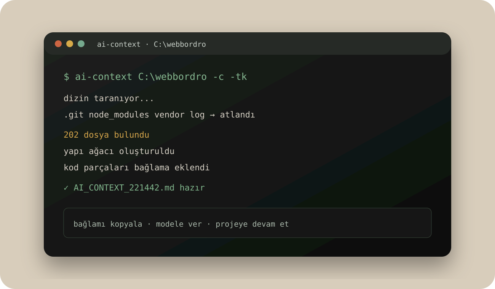
ATÖLYENİN DİĞER RAFLARI
Ana sayfada yalnızca üç çalışma öne çıkıyor. Diğer proje, deney ve yöntem kayıtlarına alanlar üzerinden ulaşabilirsin.
Büyük proje klasörlerini ayıklayıp okunabilir, kopyalanabilir ve token tahminli bir yapay zekâ bağlamına dönüştüren CLI aracı.
Masaüstü, web ve Python sürümleri bulunan; hesaplama motoru, mevzuat, raporlama ve yönetim katmanlarıyla büyüyen bordro sistemi.
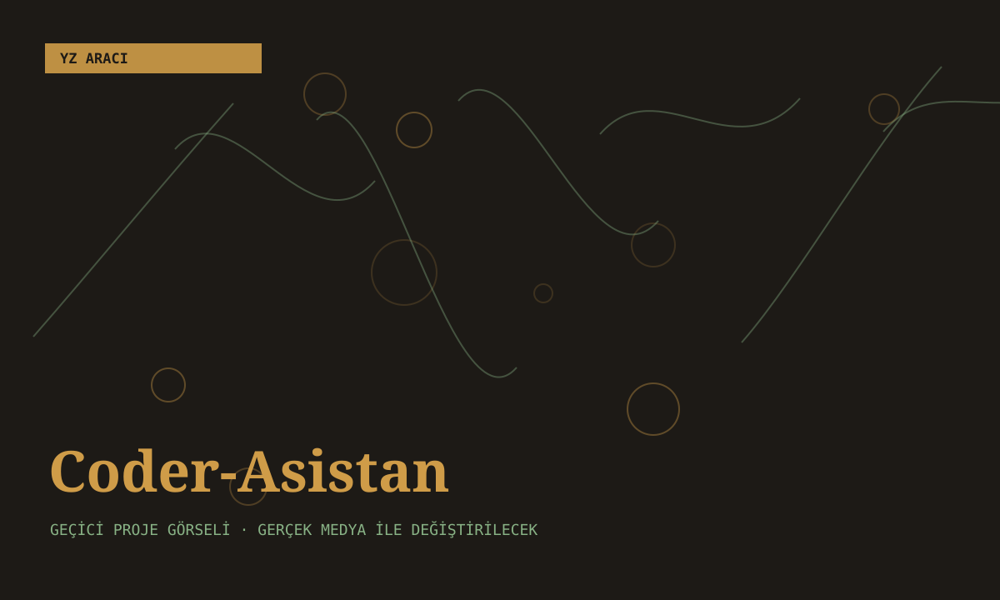
Farklı yapay zekâ modelleriyle kod, proje yapısı ve dokümantasyon üreten terminal asistanı.
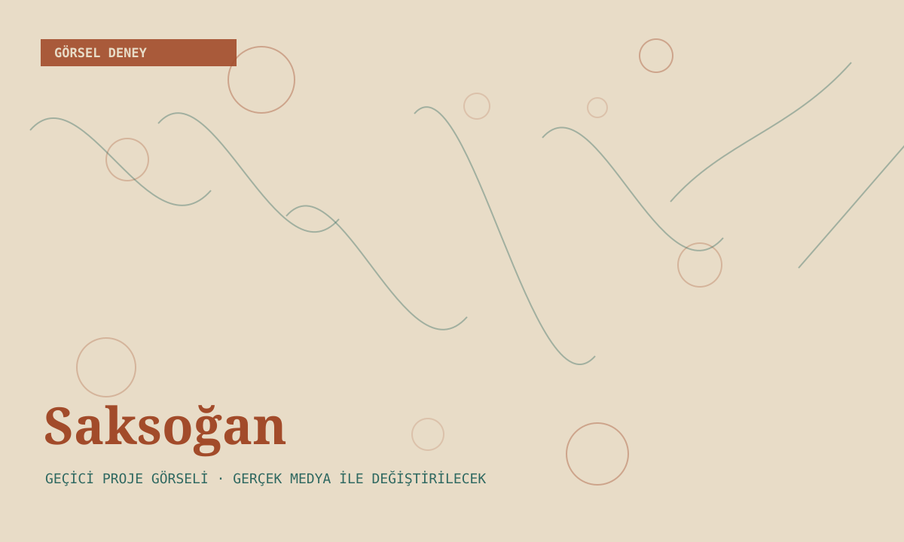
Bir saksağanın gövdesini soğana dönüştürürken anatomik mantığı ve gerçekçilik hissini koruma çalışması.
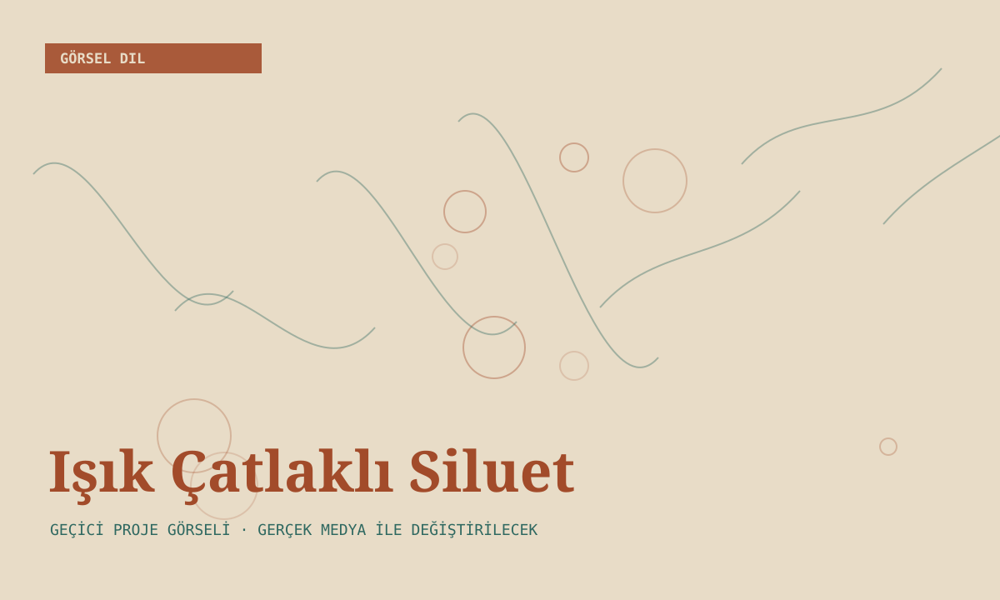
Karanlığı katı bir kabuk, beyaz ışığı ise ince çatlaklardan sızan bir yapı olarak ele alan kişisel görsel arayış.
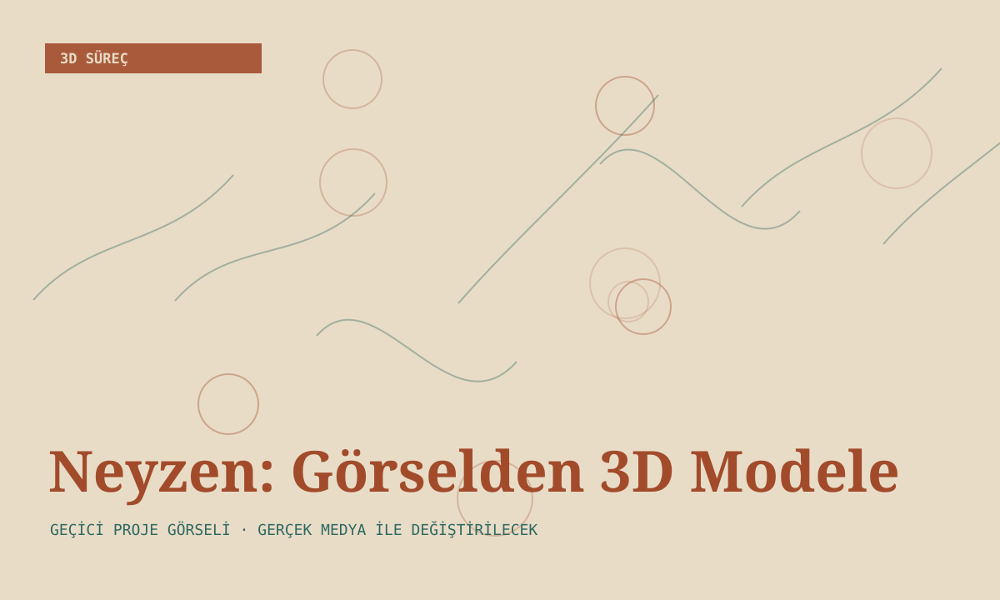
Bir figür kompozisyonunu temizleyip 3D üretime hazırlama, model ve doku zinciri deneyi.
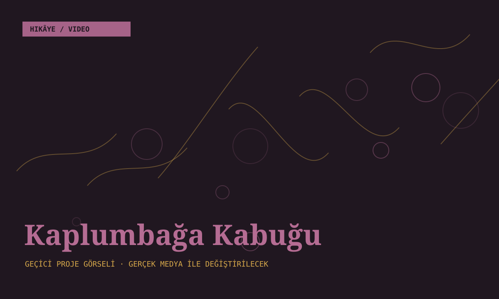
Aynı kabuğun farklı hayvanlara geçtiği kısa hikâyede karakter ve nesne sürekliliği deneyi.
Blender ve InvokeAI katmanlarından başlayıp Flow ve Meta AI ile harekete uzanan görsel üretim süreci.
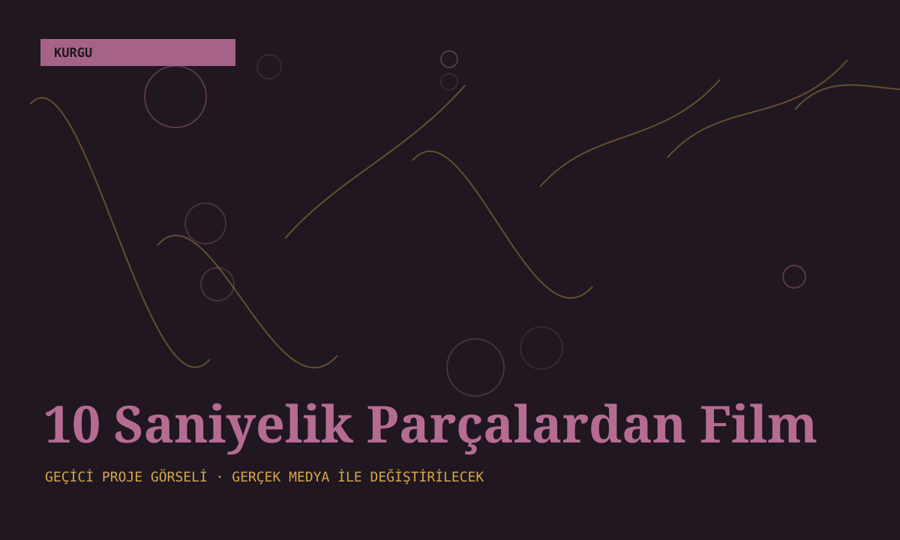
Her biri tek başına çalışan kısa sekansları zamanla daha uzun bir filme dönüştürme fikri.
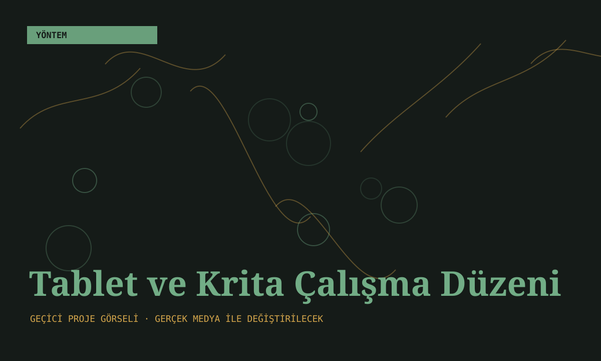
Ekransız tableti dik konumlandırma ve fırça stabilizasyonunu kişisel çizim biçimine uyarlama.
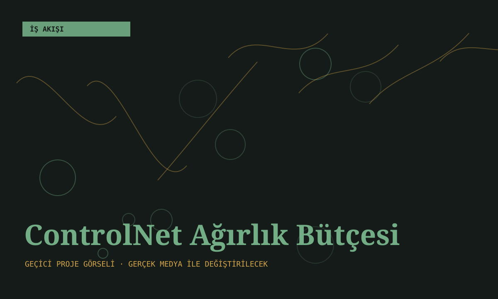
Aynı anda çalışan yönlendirmeleri ortak bir ağırlık bütçesi gibi ele alma yaklaşımı.
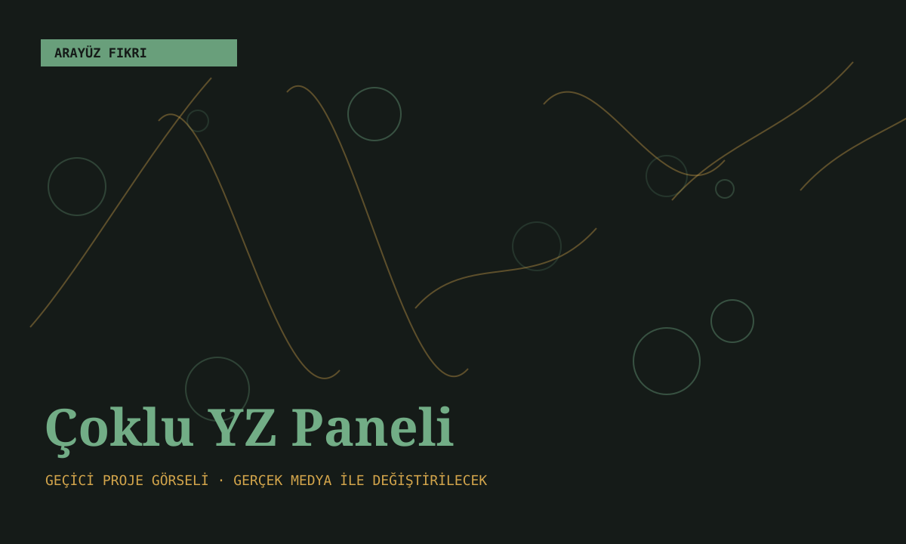
Aynı soruyu birden fazla yapay zekâya sırayla yönelten ve cevapları tek masada toplayan panel fikri.
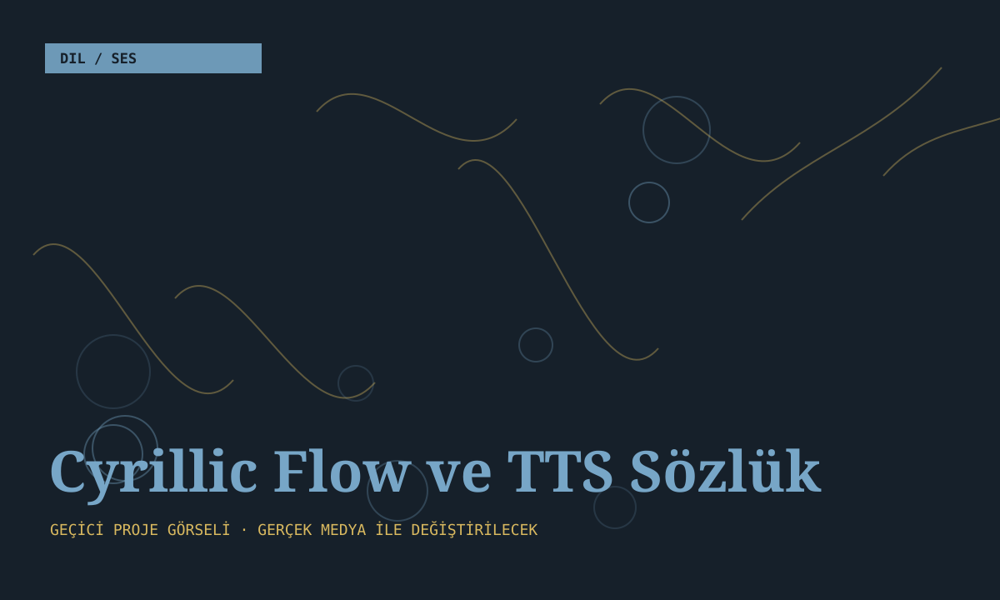
Kelime verisini JSON’da tutup ElevenLabs ile ses dosyalarına dönüştüren dil öğrenme ve TTS sistemi.
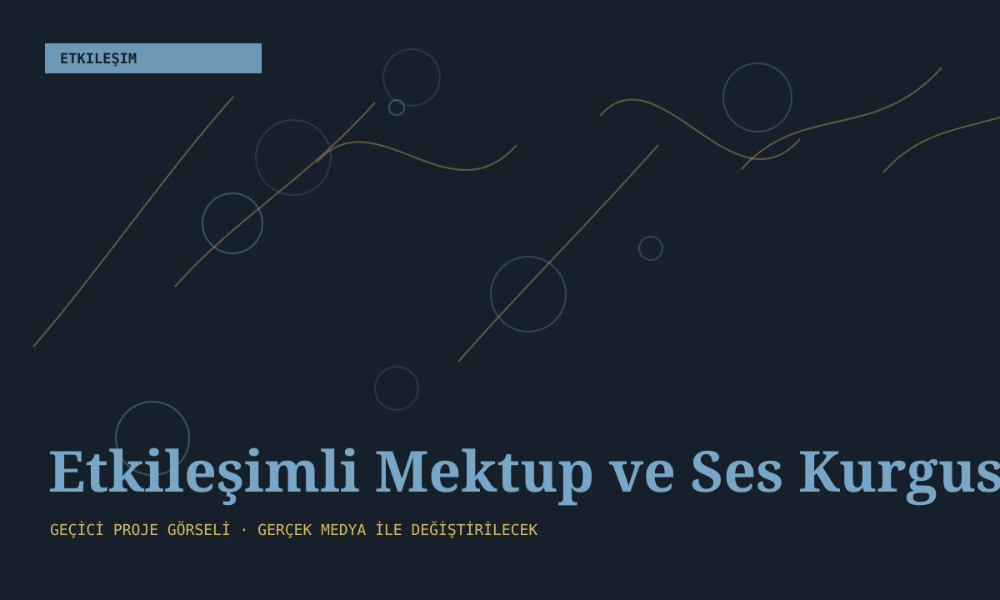
Animasyon, ses efektleri ve küçük etkileşimlerle ilerleyen kişisel web deneyleri.
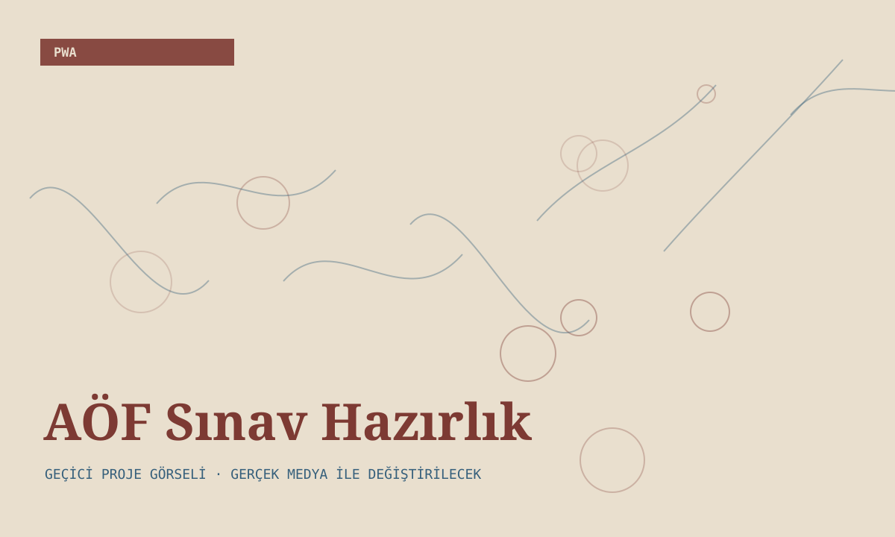
Açıköğretim derslerinde soru, analiz, senkronizasyon ve mobil kullanım için geliştirilen sınav hazırlık uygulaması.
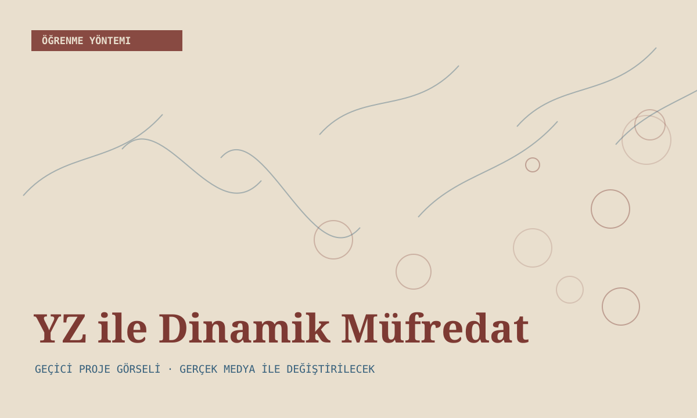
Ders kaynaklarını yapay zekâ ile tarayıp ihtiyaca göre öğrenme rotası çıkarma deneyi.
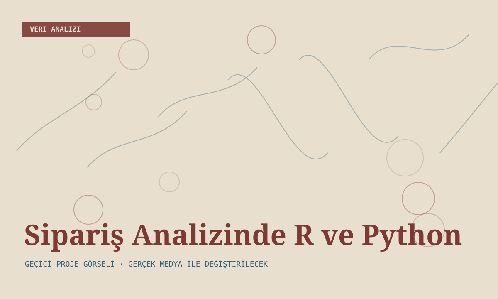
Haftalık siparişlerden örüntü, ürün ilişkisi ve karar ağacı çıkarmaya yönelik veri analizi deneyi.
BAŞLANGIÇ NOKTASI
Yapay zekâyla tanışmamın ve bugün bu noktaya gelmemin başlangıcında Mehmet Fırat hocam var. Her e-postama sabırla ve nazikçe cevap verdi; merakımı sürdürmemde ve ilk projelerimi kurmamda desteğini hiç esirgemedi.
Akademik profilini aç
AHMET ÇETİN
Uzun yıllardır üretim ve iş dünyasının içindeyim. Yazılım, yapay zekâ, dijital çizim, 3D, video ve ses araçları zamanla aynı masada buluştu. acetin.com.tr, ortaya çıkan işleri ve o işlerin arkasındaki denemeleri bir araya getirdiğim kişisel çalışma alanım.